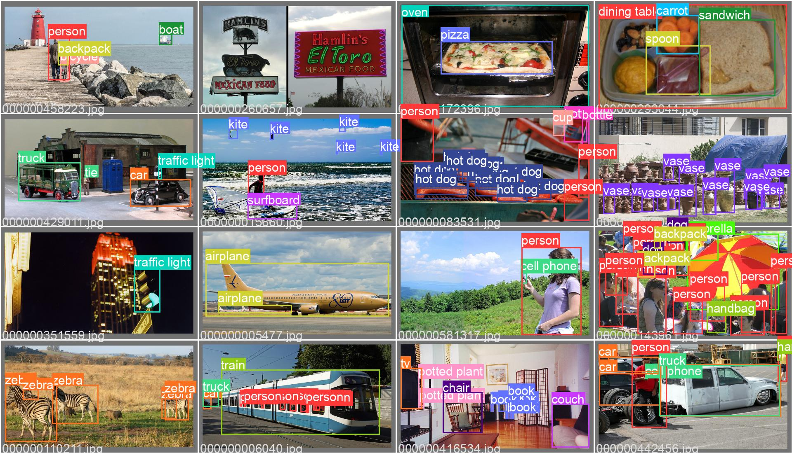

history
🏆一瞥便是惊鸿，芳华乱了浮生~
由于其速度和准确性，\(YOLO\) 成为世界著名的目标检测算法之一。 
YOLOv1🎉
\(YOLO\) 是 "You only look once" 的缩写 , 是将图像划分为网格系统的目标检测算法。(🤔️网格中的每个单元负责检测自身内的目标)。
官方论文:You Only Look Once: Unified, Real-Time Object Detection
Author: Joseph Redmon
YOLOv2🌟
\(YOLOv2\) 是\(YOLO\)的原作者Joseph Redmon 和 Ali Farhadi 的共同作品。
他们一起发表了： YOLO9000:Better, Faster, Stronger
Author: Joseph Redmon and Ali Farhadi
Released: 25 Dec 2016
YOLOv3🌟
\(YOLOv3\) 是 \(YOLOv2\) 改良版 ，出自 \(YOLOv2\) 的原作者 (Joseph Redmon 和 Ali Farhadi) , 一起做出来贡献。 他们共同发表了 YOLOv3: An Incremental Improvement
最初的约洛论文是由谁提供的 here
Author: Joseph Redmon and Ali Farhadi Released: 8 Apr 2018
YOLOv4🍰
随着原作者 \(YOLO\) 的工作陷入僵局, \(YOLOv4\) 发表由 Alexey Bochoknovskiy, Chien-Yao Wang, 和 Hong-Yuan Mark Liao. 论文名为 YOLOv4: Optimal Speed and Accuracy of Object Detection
YOLOV5 🚀
\(YOLOv4\) 发布后不久，Glenn Jocher使用Pytorch框架引入了 \(YOLOv5\) 没有发布论文。
代码链接: https://github.com/ultralytics/yolov5
YOLOv6⚡
\(YOLOv6\) 提供了一系列面向各种工业应用场景的模型，包括微小级(nano)，极小极(tiny)、小(small)，中(medium)，大模型(large)。
官方论文: YOLOv6: A Single-Stage Object Detection Framework for Industrial Applications
代码链接：https://github.com/meituan/YOLOv6
YOLOv7👍
官方论文:YOLOv7: Trainable bag-of-freebies sets new state-of-the-art for real-time object detectors